Terakhir diperbarui: 17 November 2025
Penulis: Habibie Ed Dien
Pada codelab ini, Anda akan mempelajari tentang persistensi data di Flutter beserta contoh penggunaannya. Cara kerja, manfaat, dan cara mengelola data JSON lebih lanjut.
Video berikut menjelaskan tentang persistensi data menggunakan Shared Preferences. Silakan simak dan pahami!
Tujuan Praktikum
Setelah menyelesaikan codelab ini Anda akan mampu untuk:
- Mengonversi model Dart ke JSON
- Menangani skema JSON yang tidak kompatibel dengan model
- Menangani error JSON
- Menyimpan data sederhana dengan SharedPreferences
- Mengakses filesystem dengan plugin
path_provider - Mengakses filesystem dengan direktori
- Menggunakan secure storage untuk menyimpan data
Sumber Daya yang Dibutuhkan
Berikut merupakan sumber daya yang diperlukan untuk menyelesaikan praktikum ini:
- PC atau Laptop dengan spesifikasi minimum RAM 8GB Processor Core i3
- Koneksi internet minimal kecepatan 5 Mbps
- Chrome Browser
- Perangkat mobile (Android/iOS)
Pengetahuan yang Anda harus Miliki
- Algoritma dan Pemrograman Dasar
- Pemrograman Berorientasi Objek
- Bahasa Pemrograman Dart Dasar
- Teknik Dasar Pemrograman Asynchronous
Kebanyakan aplikasi, terutama yang berbasis bisnis, pasti membutuhkan operasi CRUD: Create, Read, Update, dan Delete data. Data dapat disimpan secara local atau remote. Tanpa peduli data itu akan disimpan di mana, pada beberapa kasus kita tetap membutuhkan data itu berbentuk JSON sebelum itu disimpan secara permanen. Sehingga kita perlu tau metode apa saja yang diperlukan untuk mengolah JSON di Dart dan Flutter. Hal ini akan sangat membantu pada beberapa teknologi yang mungkin Anda akan gunakan, seperti SQLite, Sembast, dan database Firebase. Semua itu membutuhkan proses pengiriman dan unduh data berupa JSON.
Selesaikan langkah-langkah praktikum berikut ini menggunakan editor Visual Studio Code (VS Code) atau Android Studio atau code editor lain kesukaan Anda. Jawablah di laporan praktikum Anda (ketik di README.md) pada setiap soal yang ada di beberapa langkah praktikum ini.
Langkah 1: Buat Project Baru
Buatlah sebuah project flutter baru dengan nama store_data_nama (beri nama panggilan Anda) di folder week-13/src/ repository GitHub Anda.
Langkah 2: Buka file main.dart
Ketiklah kode seperti berikut ini.
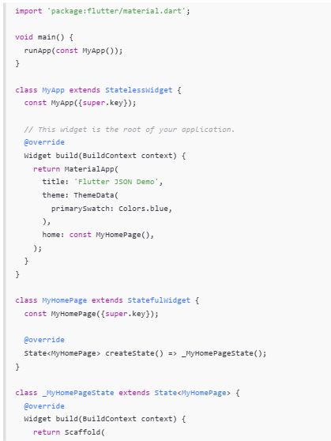
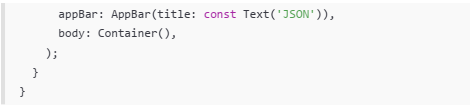
Langkah 3: Buat folder baru assets
Buat folder baru assets di root project Anda
Langkah 4: Buat file baru pizzalist.json
Letakkan file ini di dalam folder assets, lalu salin data JSON berikut ke file tersebut.
[
{
"id": 1,
"pizzaName": "Margherita",
"description": "Pizza with tomato, fresh mozzarella and basil",
"price": 8.75,
"imageUrl": "images/margherita.png"
},
{
"id": 2,
"pizzaName": "Marinara",
"description": "Pizza with tomato, garlic and oregano",
"price": 7.50,
"imageUrl": "images/marinara.png"
},
{
"id": 3,
"pizzaName": "Napoli",
"description": "Pizza with tomato, garlic and anchovies",
"price": 9.50,
"imageUrl": "images/marinara.png"
},
{
"id": 4,
"pizzaName": "Carciofi",
"description": "Pizza with tomato, fresh mozzarella and artichokes",
"price": 8.80,
"imageUrl": "images/marinara.png"
},
{
"id": 5,
"pizzaName": "Bufala",
"description": "Pizza with tomato, buffalo mozzarella and basil",
"price": 12.50,
"imageUrl": "images/marinara.png"
}
]Jika Anda ingin menggunakan data JSON yang lain, Anda dapat mengakses salah satu dari daftar API di tautan ini: https://github.com/public-apis/public-apis
Langkah 5: Edit pubspec.yaml
Tambahkan referensi folder assets ke file pubspec.yaml seperti berikut ini.
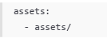
Langkah 6: Edit maint.dart
Buatlah variabel seperti berikut ini class _MyHomePageState.
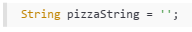
Langkah 7: Tetap di main.dart
Untuk membaca isi dari file pizzalist.json di dalam class _MyHomePageState, tambahkan method readJsonFile seperti kode berikut untuk membaca file json.
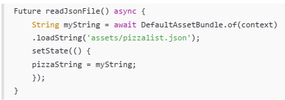
Langkah 8: Panggil method readJsonFile
Panggil method readJsonFile di initState
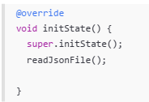
Langkah 9: Tampilkan hasil JSON
Kemudian tampilkan hasil JSON di body scaffold.
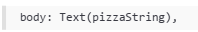
Langkah 10: Run
Jika kode sudah benar, seharusnya tampil seperti gambar berikut ini.
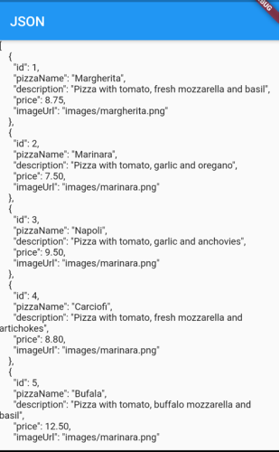
Langkah 11: Buat file baru pizza.dart
Kita ingin mengubah data json tersebut dari String menjadi objek List. Maka perlu membuat file class baru di folder lib/model dengan nama file pizza.dart.
Langkah 12: Model pizza.dart
Ketik kode berikut pada file pizza.dart
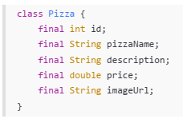
Langkah 13: Buat constructor()
Di dalam class Pizza definisikan constructor fromJson, yang mana akan mengambil data berupa Map sebagai parameter dan mengubah Map ke objek Pizza seperti kode berikut:
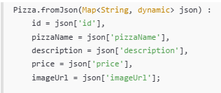
Langkah 14: Pindah ke class _MyHomePageState
Tambahkan kode jsonDecode seperti berikut.
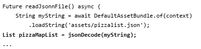
Langkah 15: Pastikan impor class
Perhatikan pada bagian atas file bahwa telah berhasil impor kedua file berikut.
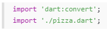
Anda telah berhasil mengimpor pustaka yang diperlukan dan melakukan decoding string JSON menjadi List pizzaMapList pada Langkah ini. Selanjutnya, kita akan mengonversi List Map tersebut menjadi List objek Dart (List<Pizza>).
Langkah 16: Konversi List Map ke List Objek Dart
Di dalam method readJsonFile(), setelah baris List pizzaMapList = jsonDecode(myString);, tambahkan kode berikut untuk mengonversi setiap Map di pizzaMapList menjadi objek Pizza dan menyimpannya ke myPizzas.
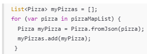
Langkah 17: return myPizzas
Hapus atau komentari setState yang menampilkan pizzaString dari Langkah 7. Kemudian, kembalikan myPizzas.
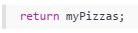
Langkah 18: Perbarui Signature Method
Perbarui signature method readJsonFile() untuk secara eksplisit menunjukkan bahwa ia mengembalikan Future yang berisi List.
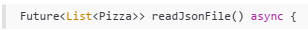
Langkah 19: Deklarasikan Variabel State
Di dalam class _MyHomePageState, deklarasikan variabel state baru untuk menampung List objek Pizza.
Langkah 20: Panggil di initState dan Perbarui State
Perbarui method initState() di _MyHomePageState untuk memanggil readJsonFile(). Karena readJsonFile() mengembalikan Future, gunakan .then() untuk mendapatkan hasilnya, dan perbarui state myPizzas.
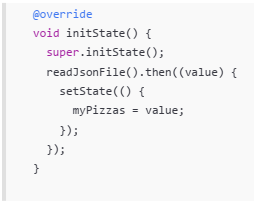
Langkah 21: Tampilkan Data di ListView
Perbarui body dari Scaffold untuk menggunakan ListView.builder yang menampilkan pizzaName sebagai judul dan description sebagai subjudul dari setiap objek Pizza.
body: ListView.builder(
itemCount: myPizzas.length,
itemBuilder: (context, index) {
return ListTile(
title: Text(myPizzas[index].pizzaName),
subtitle: Text(myPizzas[index].description),
);
},
));
}Langkah 22: Run
Jalankan aplikasi. Sekarang, Anda akan melihat data pizza ditampilkan dalam daftar yang lebih terstruktur sebagai objek List Dart.
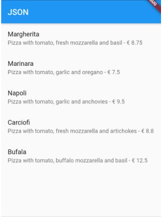
Langkah 23: Tambahkan Method toJson() (Serialization)
Di file pizza.dart, tambahkan method toJson() ke class Pizza. Method ini berfungsi untuk mengonversi objek Dart kembali menjadi Map (langkah pertama menuju JSON String).
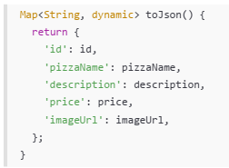
Langkah 24: Buat Fungsi Konversi JSON String
Di main.dart, tambahkan fungsi convertToJSON di dalam _MyHomePageState untuk menggunakan jsonEncode (dari dart:convert) yang mengubah List objek Dart menjadi JSON String.
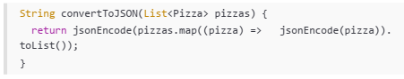
Langkah 25: Tampilkan Output JSON di Konsol
Di method readJsonFile(), tambahkan kode untuk memanggil convertToJSON dan mencetak hasilnya ke Debug Console sebelum mengembalikan myPizzas.
String json = convertToJSON(myPizzas);
print(json);
return myPizzas;Langkah 26: Cek Output Konsol
Jalankan aplikasi. Periksa Debug Console untuk melihat List objek Pizza telah berhasil dikonversi kembali menjadi JSON String.
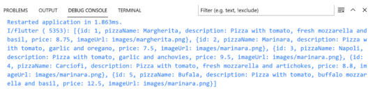
Setelah Anda menyelesaikan praktikum 1, Anda dapat melanjutkan praktikum 2 ini. Selesaikan langkah-langkah praktikum berikut ini menggunakan editor Visual Studio Code (VS Code) atau Android Studio atau code editor lain kesukaan Anda. Jawablah di laporan praktikum Anda pada setiap soal yang ada di beberapa langkah praktikum ini.
Pada codelab ini, kita akan berfokus pada skema JSON yang tidak kompatibel dengan model yang telah kita buat sebelumnya. Kita akan membuat kode lebih tangguh dengan menangani type casting dan nilai null.
Langkah 1: Simulasikan Error
Anggaplah Anda telah mengganti file pizzalist.json dengan data yang tidak konsisten.
Langkah 2: Lihat Error Tipe Data String ke Int
Jika ID pizza di JSON dikirim sebagai String (misalnya "id": "1" di JSON) sementara model Dart mengharapkan int, Anda akan melihat runtime error.
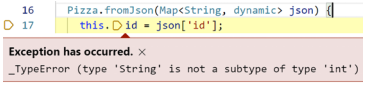
Langkah 3: Terapkan tryParse dan Null Coalescing pada ID
Di Pizza.fromJson (file pizza.dart), ganti cara mendapatkan nilai id menggunakan int.tryParse dan null coalescing operator (??) untuk memberikan nilai default 0 jika parsing gagal atau nilainya null. Tujuannya adalah memastikan nilai id selalu integer.
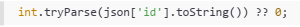
Langkah 4: Simulasikan Error Null pada String
Jika Anda menjalankan ulang dan ada bidang yang hilang (misalnya imageUrl hilang), Anda mungkin mendapatkan error Null.
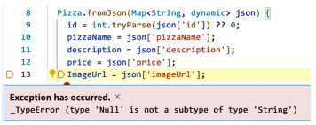
Langkah 5: Terapkan Null Coalescing pada String
Tambahkan null coalescing operator (??) pada imageUrl untuk memberikan string kosong ('') jika nilai yang diterima adalah null. Lakukan hal yang sama untuk bidang String lainnya seperti pizzaName dan description jika perlu.
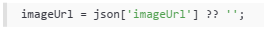
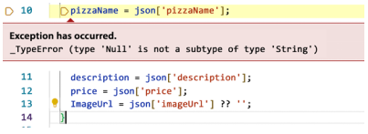
Langkah 6: Gunakan toString() untuk Field String
Untuk memastikan semua nilai yang digunakan sebagai String benar-benar String (bahkan jika mereka mungkin dikirim sebagai int atau tipe lain), gunakan toString().
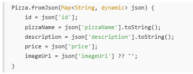
Langkah 7: Simulasikan Error Tipe Data String ke Double
Jika Anda menjalankan ulang, Anda mungkin menemukan error saat mengonversi String ke Double untuk bidang price.
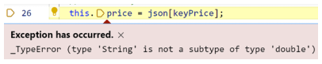
Langkah 8: Terapkan double.tryParse
Terapkan double.tryParse dengan null coalescing (?? 0) untuk bidang price, sama seperti yang Anda lakukan pada id.
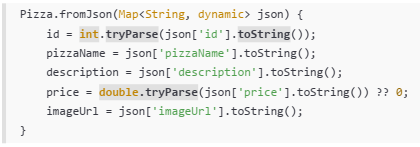
Langkah 9: Run dan Perhatikan Output Null
Setelah mengimplementasikan semua perbaikan tipe data, aplikasi akan berjalan, tetapi mungkin menampilkan "null" di UI jika ada bidang yang hilang atau gagal diparsing (seperti pizzaName atau description).
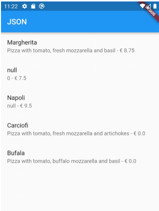
Langkah 10: Tambahkan Operator Ternary untuk Output User-Friendly
Perbaiki masalah tampilan "null" dengan menambahkan operator ternary yang memeriksa apakah nilai null sebelum mengubahnya menjadi String. Jika null, berikan nilai pengganti yang ramah pengguna seperti 'No name' atau string kosong ('').
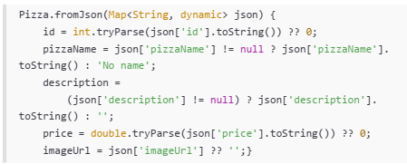
Langkah 11: Run
Jalankan aplikasi. Sekarang data yang tidak konsisten telah ditangani dengan baik, dan UI tidak menampilkan nilai null.
Pada praktikum 3 ini, Anda akan berfokus pada Catching common JSON errors, yaitu dengan mengganti string literals (nama kunci JSON) dengan konstanta untuk menghindari error yang sulit di-debug (kesalahan pengetikan).
Setelah Anda menyelesaikan praktikum 2, Anda dapat melanjutkan praktikum 3 ini. Selesaikan langkah-langkah praktikum berikut ini menggunakan editor Visual Studio Code (VS Code) atau Android Studio atau code editor lain kesukaan Anda. Jawablah di laporan praktikum Anda pada setiap soal yang ada di beberapa langkah praktikum ini.
Langkah 1: Buka pizza.dart dan Buat Konstanta
Di bagian atas file pizza.dart, di luar class Pizza, deklarasikan konstanta untuk setiap kunci JSON.
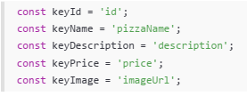
Langkah 2: Perbarui fromJson() menggunakan Konstanta
Di constructor Pizza.fromJson, ganti semua string literal kunci JSON (misalnya 'id') dengan konstanta yang sesuai (keyId).
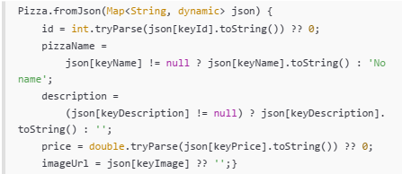
Langkah 3: Perbarui toJson() menggunakan Konstanta
Perbarui juga method toJson() agar menggunakan konstanta yang sama.
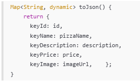
Langkah 4: Run
Jalankan aplikasi. Tidak akan ada perubahan visual, tetapi kode Anda kini lebih safe dan maintainable.
Praktikum ini membahas menyimpan data sederhana dengan SharedPreferences. Kita akan menggunakan shared_preferences untuk menyimpan hitungan sederhana.
Setelah Anda menyelesaikan praktikum 3, Anda dapat melanjutkan praktikum 4 ini. Selesaikan langkah-langkah praktikum berikut ini menggunakan editor Visual Studio Code (VS Code) atau Android Studio atau code editor lain kesukaan Anda. Jawablah di laporan praktikum Anda pada setiap soal yang ada di beberapa langkah praktikum ini.
Langkah 1: Tambahkan Dependensi
Di Terminal, tambahkan package shared_preferences.
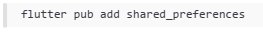
Langkah 2: Install Dependensi
Jalankan flutter pub get jika editor Anda tidak melakukannya secara otomatis.
Langkah 3: Lakukan Import
Di file main.dart, tambahkan import untuk shared_preferences.
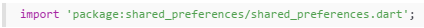
Langkah 4: Tambahkan Variabel appCounter
Di dalam class _MyHomePageState (atau State class yang Anda gunakan), deklarasikan variabel appCounter.
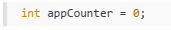
Langkah 5: Buat Method readAndWritePreference
Buat method asinkron readAndWritePreference().
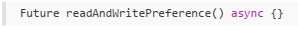
Langkah 6: Dapatkan Instance SharedPreferences
Di dalam method tersebut, dapatkan instance SharedPreferences. Perlu diingat bahwa ini adalah operasi asinkron, jadi gunakan await.
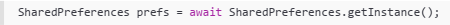
Langkah 7: Baca, Cek Null, dan Increment Counter
Baca nilai appCounter dari storage. Gunakan null coalescing (?? 0) untuk memastikan nilai default 0 jika data belum ada. Kemudian increment nilai tersebut.
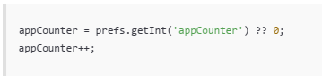
Langkah 8: Simpan Nilai Baru
Simpan nilai appCounter yang sudah di-increment kembali ke storage menggunakan prefs.setInt().
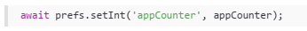
Langkah 9: Perbarui State
Panggil setState() untuk memperbarui UI dengan nilai baru appCounter.
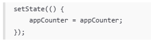
Langkah 10: Panggil di initState()
Panggil readAndWritePreference() di initState() agar penghitung dibaca saat aplikasi pertama kali dibuka.
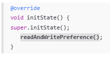
Langkah 11: Perbarui Tampilan (body)
Ganti body Scaffold Anda dengan tata letak yang menampilkan hitungan dan tombol 'Reset counter'.
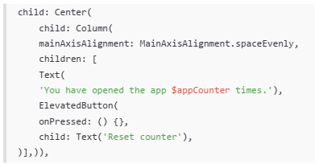
Langkah 12: Run
Aplikasi sekarang akan menampilkan "You have opened the app 1 times" (jika ini pembukaan pertama).
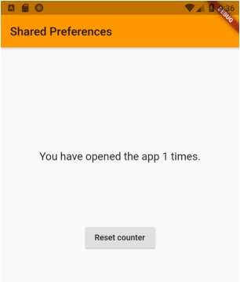
Langkah 13: Buat Method deletePreference()
Tambahkan method asinkron deletePreference() yang berfungsi untuk menghapus data menggunakan prefs.clear().
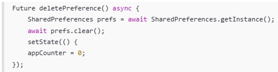
Langkah 14: Panggil deletePreference()
Hubungkan deletePreference() ke tombol 'Reset counter'.
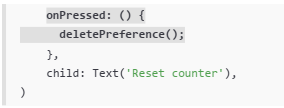
Langkah 15: Run
Jalankan aplikasi. Tombol reset sekarang akan berfungsi, menghapus semua pasangan kunci-nilai dan mereset hitungan.
Praktikum ini berfokus untuk mengakses file system menggunakan path_provider untuk menemukan direktori umum (documents dan temp) pada perangkat.
Setelah Anda menyelesaikan praktikum 4, Anda dapat melanjutkan praktikum 5 ini. Selesaikan langkah-langkah praktikum berikut ini menggunakan editor Visual Studio Code (VS Code) atau Android Studio atau code editor lain kesukaan Anda. Jawablah di laporan praktikum Anda pada setiap soal yang ada di beberapa langkah praktikum ini.
Langkah 1: Tambahkan Dependensi
Tambahkan package path_provider melalui Terminal.
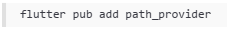
Langkah 2: Lakukan Import
Di file main.dart, tambahkan import untuk path_provider.
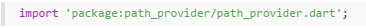
Langkah 3: Tambahkan Variabel Path State
Di State class Anda, tambahkan variabel untuk menyimpan jalur direktori dokumen dan temporer.
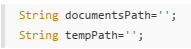
Langkah 4: Buat Method getPaths()
Buat method asinkron getPaths() yang menggunakan getApplicationDocumentsDirectory() dan getTemporaryDirectory() untuk mengambil jalur sistem file yang tepat, lalu perbarui state.
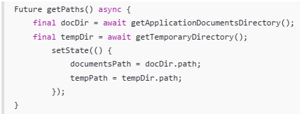
Langkah 5: Panggil getPaths() di initState()
Panggil getPaths() di initState().
@override
void initState() {
super.initState();
getPaths();
}Langkah 6: Perbarui Tampilan
Perbarui body Scaffold untuk menampilkan kedua jalur yang telah diambil.
Langkah 7: Run
Jalankan aplikasi. Anda akan melihat path absolut ke direktori dokumen dan cache aplikasi di perangkat Anda.

Praktikum ini melanjutkan dari Praktikum 5, berfokus pada akses file system untuk mengakses directories, menggunakan library dart:io untuk operasi file.
Setelah Anda menyelesaikan praktikum 5, Anda dapat melanjutkan praktikum 6 ini. Selesaikan langkah-langkah praktikum berikut ini menggunakan editor Visual Studio Code (VS Code) atau Android Studio atau code editor lain kesukaan Anda. Jawablah di laporan praktikum Anda pada setiap soal yang ada di beberapa langkah praktikum ini.
Langkah 1: Lakukan Import dart:io
Di file main.dart, tambahkan import untuk pustaka dart:io.
Langkah 2: Tambahkan Variabel File dan Text
Di State class, tambahkan variabel myFile (dengan modifier late) dan fileText untuk menyimpan konten yang akan dibaca.
Langkah 3: Buat Method writeFile()
Buat method asinkron writeFile() yang menggunakan myFile.writeAsString() untuk menulis konten ke file. Kata ‘Margherita, Capricciosa, Napoli' silakan Anda ganti dengan Nama Lengkap dan NIM Anda.
Future<bool> writeFile() async {
try {
await myFile.writeAsString('Margherita, Capricciosa, Napoli');
return true;
} catch (e) {
return false;
}
}Langkah 4: Inisialisasi File dan Panggil writeFile() di initState()
Perbarui initState(): setelah getPaths() selesai, inisialisasi myFile dengan jalur lengkap di direktori dokumen, dan panggil writeFile().
Langkah 5: Buat Method readFile()
Buat method asinkron readFile() yang menggunakan myFile.readAsString() untuk membaca konten file dan memperbarui fileText melalui setState().
Langkah 6: Edit build() dan Tambahkan Tombol Baca
Di method build(), tambahkan ElevatedButton yang memanggil readFile() dan Text yang menampilkan fileText di bawahnya.
Langkah 7: Run
Jalankan aplikasi. Setelah menekan tombol 'Read File', konten yang ditulis (Margherita, Capricciosa, Napoli) akan ditampilkan atau sesuai nama dan NIM Anda.

Pada praktikum ini Anda akan praktik menggunakan secure storage untuk menyimpan data menggunakan package flutter_secure_storage untuk menyimpan data sensitif (seperti kata sandi) dengan aman.
Setelah Anda menyelesaikan praktikum 6, Anda dapat melanjutkan praktikum 7 ini. Selesaikan langkah-langkah praktikum berikut ini menggunakan editor Visual Studio Code (VS Code) atau Android Studio atau code editor lain kesukaan Anda. Jawablah di laporan praktikum Anda pada setiap soal yang ada di beberapa langkah praktikum ini.
Langkah 1: Tambahkan Dependensi
Tambahkan package flutter_secure_storage melalui Terminal.
Langkah 2: Lakukan Import
Di main.dart, impor package yang diperlukan.
import 'package:flutter_secure_storage/flutter_secure_storage.dart';Langkah 3: Tambahkan Variabel dan Controller
Di State class (_MyHomePageState), tambahkan TextEditingController dan variabel untuk menyimpan kata sandi yang dibaca.
final pwdController = TextEditingController();
String myPass = '';Langkah 4: Inisialisasi Secure Storage
Di State class, inisialisasi FlutterSecureStorage dan tentukan kuncinya.
Langkah 5: Buat Method writeToSecureStorage()
Buat method asinkron untuk menulis data dari pwdController ke secure storage.
Langkah 6: Buat Method readFromSecureStorage()
Buat method asinkron untuk membaca data dari secure storage.
Langkah 7: Edit build() untuk UI dan Logic
Perbarui method build() untuk menyertakan TextField dan dua ElevatedButton (Save Value dan Read Value). Hubungkan method save ke tombol Save Value.
// Di dalam body: Column children:
TextField(
controller: pwdController,
),
ElevatedButton(child: const Text('Save Value'), onPressed: () {
writeToSecureStorage();
}),
// ...Langkah 8: Hubungkan Read ke Tombol
Hubungkan method read ke tombol Read Value, perbarui myPass dan UI melalui setState().
Langkah 9: Run
Jalankan aplikasi. Masukkan teks, simpan, lalu baca kembali. Teks tersebut seharusnya ditampilkan, menandakan data telah disimpan dan diambil dengan aman.
Selamat Anda telah menyelesaikan Codelab ini. Anda telah mempelajari terkait Persistensi Data dan contoh penggunaannya.
Pada codelab berikutnya, Anda akan mempelajari tentang Restful API.
Jangan sungkan jika Anda menemukan kesalahan pada codelab ini untuk merevisi atau sekedar melaporkan issue melalui tautan di pojok kiri bawah (Report a mistake).
Apa selanjutnya?
Silakan cek beberapa sumber belajar lainnya...
- https://pub.dev/packages/sembast
- Flutter Tutorial - Secure Storage & Data Persistence
- https://pub.dev/packages/sqflite
- https://pub.dev/packages/firebase_database
- https://pub.dev/packages/json_serializable
- https://pub.dev/packages/built_value
- https://docs.flutter.dev/cookbook/persistence/reading-writing-files
- https://api.flutter.dev/flutter/dart-io/File-class.html
- https://pub.dev/packages/encrypt
- https://pub.dev/packages/crypto
Referensi
- Buku "Flutter Cookbook, 100+ step-by-step recipes for building cross-platform, professional grade apps with Flutter 3.10.x and Dart 3.x - Second Edition" oleh Simone Alessandria (2023)
- Flutter for Beginners Second Edition
- https://www.youtube.com/flutterdev
- https://github.com/PacktPublishing/Flutter-for-Beginners-Second-Edition